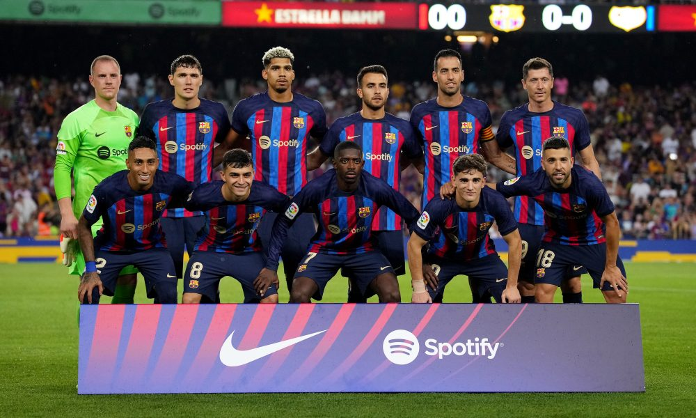
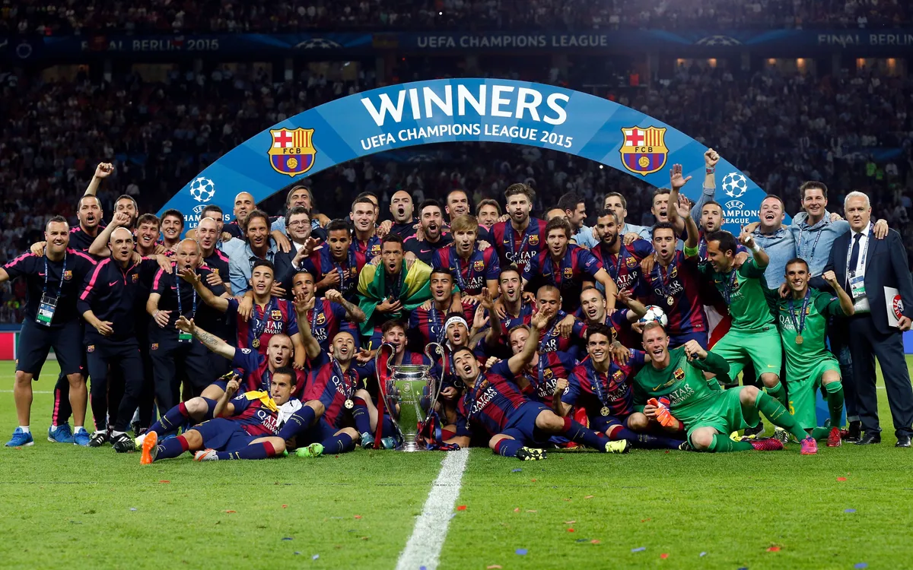
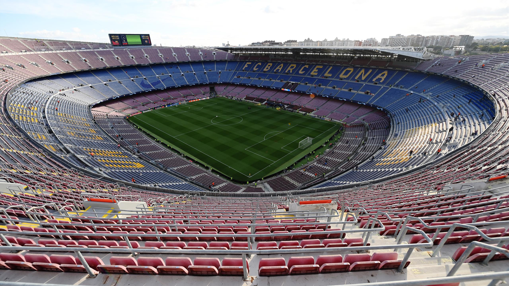

Futbol Club Barcelona, more commonly known as Barça or Blaugrana, is a professional football (or soccer for those in the United States) club based out of Barcelona, Spain, that competes in the top division in Spanish football, La Liga. The club was founded on November 29, 1899 by a group of English, German, Swiss, and Catalan footballers led by Joan Gamper, a Swiss-born footballer who captained the club from 1899 to 1903 as well. FC Barcelona has become so engrained into the culture of Catalonia that club's motto is "Més que un club," or more than a club. Additionally, unlike many other football clubs, FC Barcelona is owned and operated by its supporters, and currently, the club is the fourth most valuable sports team in the world, worth $4.76 billion.
Throughout their existence, FC Barcelona has won a record 75 domestic trophies: 26 La Liga, 31 Copa del Rey, 13 Copa de España, and other smaller domestic competitions. Internationally, the club has won 22 titles, with the most notable ones being the UEFA Champions League and UEFA Cup Winners' Cup, in which FC Barcelona has won five and four times, respectively.
The team currently has 21 first team players, some of the most notable players being Robert Lewandowski, Ousmane Dembélé, Pedri, Frenkie De Jong, and Marc-André ter Stegen. Furthermore, the club is currently managed by Xavi, a historical former player of the club, and the current president is Joan Laporta. FC Barcelona plays at Spotify Camp Nou, the fourth largest football stadium in the world with a capacity of 99,354 seats.
